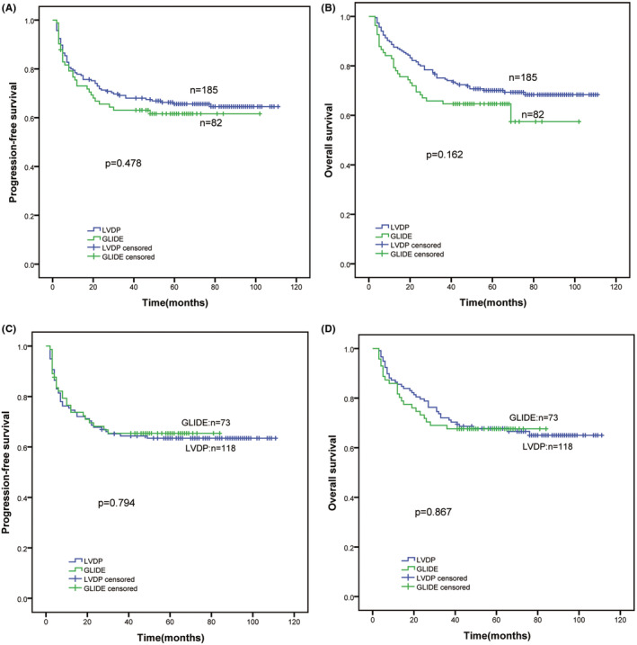
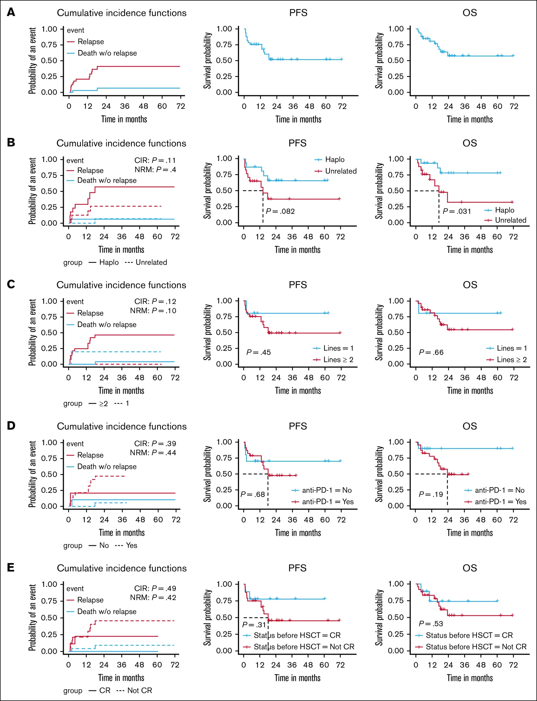

496 — Điều trị & theo dõi duy trì u lympho T/NK nội nhãn: asparaginase, ghép tế bào gốc, EBV DNA / Treatment of intraocular extranodal NK/T-cell lymphoma
Tags: pattern:viem-dich-kinh pattern:thamnhiem-mach vung:dich-kinh vung:vong-mac vung:hac-mac score:PINK-E score:Lugano-Deauville protocol:PET-CT protocol:MRI-hoc-mat protocol:tiem-noi-nhan protocol:ghep-te-bao-goc
Mức chắc chắn (certainty): tổng hợp y văn (literature synthesis) — tổng quan điều trị ENKTL (Front Immunol 2023, PMC9941192), so sánh LVDP/GLIDE 267 bệnh nhân (Cancer Med 2023, PMC10166983), pegaspargase + xạ đồng thời so với P-GEMOX + xạ tuần tự (Oncol Res 2025, PMC11964867), mSMILE nhi khoa (Transl Pediatr 2024, PMC11320010), allo-HSCT trong ENKTL kháng trị/tái phát (Blood Adv 2026, PMC13682369), MTX nội nhãn cho u lympho dịch kính–võng mạc (J Clin Med 2026, PMC13607433), loạt ENKTL có biểu hiện mắt (Eye 2025, PMC12669774), EBV DNA huyết tương (Ann Med 2025, PMC11926898) và viêm tụy do asparaginase (Front Oncol 2026, PMC13661464). Số liệu lấy nguyên từ bài gốc; tên tác giả đối chiếu Europe PMC theo PMCID.
Bài này trả lời 4 câu hỏi khi đã chẩn đoán u lympho T/NK nội nhãn: (1) Vì sao phác đồ phải chứa asparaginase, và vì sao CHOP thất bại? (2) Chọn DDGP, SMILE, P-GEMOX hay phác đồ + xạ — dựa trên gì? (3) Khi nào ghép tế bào gốc, tự thân hay đồng loài? (4) Theo dõi bằng EBV DNA và khám mắt như thế nào để không bỏ sót tái phát? Nối 473 – U lympho T/NK & u lympho thứ phát ở mắt, 462 – U lympho nội nhãn (PVRL), 491 – PVRL: theo dõi & tái phát, 494 – Độc thần kinh methotrexate và 474 – Kháng nấm nội nhãn.
1. Tổng quan bệnh học – cơ chế hình ảnh – cơ chế chọn thuốc
1.1 Vì sao asparaginase là "game changer" — và vì sao CHOP không cứu được
- Tế bào ENKTL thiếu asparagine synthetase (ASNS): tế bào ác tính không tự tổng hợp được asparagine từ aspartate, nên phụ thuộc hoàn toàn vào asparagine ngoại bào. L-asparaginase (L-Asp) thủy phân asparagine trong huyết tương → tế bào u chết vì thiếu asparagine, trong khi tế bào lành còn con đường ASNS để bù.
- Vì sao phác đồ anthracycline (CHOP) thất bại: ENKTL đề kháng đa thuốc, kể cả thuốc không phụ thuộc P-glycoprotein; tỷ lệ CR của phác đồ anthracycline chỉ khoảng 30%. Đây là lý do không được dùng CHOP làm nền cho ENKTL.
- Vì sao dạng thuốc và khoảng cách liều quan trọng: L-Asp tự nhiên có t½ ≈ 1,25 ngày; pegaspargase (PEG-Asp) có t½ ≈ 5,73 ngày. Nếu dùng L-Asp cách 3 tuần, asparagine huyết tương hồi phục giữa hai đợt → tế bào u "sống lại". Vì vậy PEG-Asp được ưu tiên và phải dùng đủ dày; đây là lý do sinh học khiến DDGP (PEG-Asp) thắng SMILE (L-Asp cách 3 tuần) trong thử nghiệm ngẫu nhiên.
- Vì sao mắt là "sanctuary" — phải tiêm nội nhãn: hàng rào máu–võng mạc và hàng rào máu–dịch kính hạn chế thuốc từ máu vào dịch kính. ENKTL nội nhãn có thể đáp ứng hệ thống nhưng vẫn còn tế bào u trong dịch kính; do đó phác đồ toàn thân + MTX nội nhãn là trục, không thay thế nhau.
- Cơ chế hình ảnh (TẠI SAO thấy đục dịch kính + mảng vàng dọc mạch): tế bào lympho T/NK ác tính xâm nhập quanh mạch võng mạc và dịch kính → phản ứng viêm + tế bào u lơ lửng → đục dịch kính dạng tế bào, mảng vàng–trắng men theo mạch ("perivascular infiltrates"), có thể kèm bong dịch dưới võng mạc. Trên OCT: tăng phản hồi dưới RPE/hắc mạc; trên B-scan: đục dịch kính, dày hắc mạc. Không có vôi hóa (khác retinoblastoma) và không có khối đặc lớn như melanoma.
- Bẫy cytokine: IL-10/IL-6 > 1 là gợi ý u lympho B (PVRL); trong u lympho T/NK, 71% ca đã công bố có IL-10/IL-6 < 1 — không dùng tỷ lệ này để loại trừ ENKTL.
1.2 Ngưỡng định lượng nằm lòng (bắt buộc nhớ)
| Chỉ số | Con số | Nguồn |
|---|---|---|
| ENKTL giai đoạn I/II — sống còn 5 năm | > 80% (tăng từ < 50% đầu thế kỷ 20) | Front Immunol 2023 (PMC9941192) |
| ENKTL giai đoạn III/IV — sống còn trung vị | > 3 năm (trước đây < 1 năm) | cùng nguồn |
| CR với phác đồ anthracycline | ~30% | cùng nguồn |
| DDGP so với SMILE (thử nghiệm ngẫu nhiên, 80 bệnh nhân) | PFS 3 năm 56,6% so với 41,8% (p = 0,004); OS 5 năm 74,3% so với 51,7% (p = 0,02); tử vong do độc tính 2,5% so với 17,5% | cùng nguồn |
| LVDP so với GLIDE (267 bệnh nhân) | ORR 83,5%, CR 62,2% toàn nhóm; 5 năm PFS 64,3%, OS 68,5%; hai phác đồ không khác (PFS p = 0,478; OS p = 0,162); LVDP ít độc hơn | Cancer Med 2023 (PMC10166983) |
| Pegaspargase + xạ đồng thời so với P-GEMOX + xạ tuần tự (52 bệnh nhân sau PSM) | ORR 100% so với 88,5%; CR 100% so với 76,9%; OS 3 năm 92,3% cả hai; PFS 3 năm 92,3% so với 80,8% | Oncol Res 2025 (PMC11964867) |
| Độc tính huyết học của pegaspargase + xạ | giảm fibrinogen độ 3 3 ca; APTT kéo dài độ 4 1 ca; không có viêm tụy, không tử vong do điều trị | cùng nguồn |
| mSMILE ở trẻ (8 bệnh nhân) | CR 62,5%, ORR 87,5%; OS 3 năm 87,5%, EFS 75%; không viêm tụy/chảy máu dị ứng; độ 3–4 ngoài huyết học ở 3 bệnh nhân (ALT, viêm miệng) | Transl Pediatr 2024 (PMC11320010) |
| MTX nội nhãn 400 µg/0,1 mL cho VRL (17 bệnh nhân) | số mũi trung vị 16 (12–25); lui bệnh hoàn toàn tại mắt 82,4%, trung vị 6 tháng; tái phát 17,6%; thị lực 1,22 → 0,74 logMAR; keratopathy 41,2%, tăng nhãn áp thoáng qua 17,6% | J Clin Med 2026 (PMC13607433) |
| ENKTL có biểu hiện mắt (107 bệnh nhân) | 12/107 = 11,2%; 8 phần phụ/4 trong nhãn; khoảng cách chẩn đoán → mắt 18,1 ± 20,8 tháng; 9 tái phát/6 tử vong (50%); 7 mắt của 6 người sống: 2 đạt 20/25, 4 < HM | Eye 2025 (PMC12669774) |
| EBV DNA huyết tương lúc chẩn đoán (NK/TCL) | < 3.255 copies/mL: PFS 5 năm 64,2% so với 16,7%; OS 64,4% so với 20,8% (p < 0,001) | Ann Med 2025 (PMC11926898) |
| Allo-HSCT ở ENKTL kháng trị/tái phát (34 bệnh nhân) | OS 1 năm 80,9%, 2 năm 57,6%; PFS 2 năm 52,1%; CIR 2 năm 40,8%; TRM 2 năm 7,04%; CR/PR trước ghép tốt hơn | Blood Adv 2026 (PMC13682369) |
| Viêm tụy do L-asparaginase | 3,9% ở 7.640 trẻ ALL; 5,9% (7/119) ở nhóm ALL người lớn trong loạt lymphoma; 21,1% viêm tụy do lymphoma là thể nặng; 2/3 ca thử dùng lại thuốc dung nạp được | Front Oncol 2026 (PMC13661464) |
 (A, C, E) Đáy mắt: đục dịch kính + thâm nhiễm vàng–trắng men theo mạch, có thể kèm xuất tiết. (B) Đèn khe: tế bào tiền phòng/dịch kính. (D) Tế bào học dịch kính: lympho rải rác, không atypia rõ — dễ âm giả. (F) Sau điều trị. Đây là hình ảnh u lympho T/NK nội nhãn, không phải viêm màng bồ đào vô căn. Nguồn: Eye 2025 (PMC12669774), Fig 2, CC BY 4.0.
(A, C, E) Đáy mắt: đục dịch kính + thâm nhiễm vàng–trắng men theo mạch, có thể kèm xuất tiết. (B) Đèn khe: tế bào tiền phòng/dịch kính. (D) Tế bào học dịch kính: lympho rải rác, không atypia rõ — dễ âm giả. (F) Sau điều trị. Đây là hình ảnh u lympho T/NK nội nhãn, không phải viêm màng bồ đào vô căn. Nguồn: Eye 2025 (PMC12669774), Fig 2, CC BY 4.0.
2. Mẫu hình + chẩn đoán phân biệt theo giai đoạn & vị trí (Gamut)
Câu hỏi lọc: "ENKTL đã xác nhận; bệnh đang ở đâu (mũi–họng, hạch, mắt, CNS) và đã điều trị gì?" — vị trí quyết định phác đồ nền, mắt quyết định thêm MTX nội nhãn.
- Giai đoạn I/II (khu trú mũi–họng): xạ trị là bắt buộc; kết hợp asparaginase-based CT ở ca nguy cơ cao. Pegaspargase + xạ đồng thời cho CR 100% trong loạt 26 bệnh nhân sau PSM, nhưng độc tính huyết học cần theo dõi.
- Giai đoạn III/IV: asparaginase-based CT (DDGP/P-GEMOX/SMILE) là nền; PD-1/PD-L1 cho kháng trị; HSCT cho ca đạt đáp ứng và nguy cơ cao.
- Có tổn thương mắt: điều trị hệ thống theo giai đoạn + MTX nội nhãn 400 µg; tổn thương phần phụ/hốc mắt có thể cần xạ trị tại chỗ; không chỉ tiêm mắt vì bệnh hệ thống quyết định sống còn (50% tử vong khi có biểu hiện mắt).
- Có tổn thương CNS: HD-MTX và phác đồ thấm CNS; allo-HSCT cân nhắc ở ca trẻ/đáp ứng.
- Tái phát/kháng trị: PD-1 inhibitor (sintilimab ORR 75%, CR 21,4%, OS 2 năm 78,6%; sugemalimab CR 37,2%, OS 2 năm 54,6%) → allo-HSCT nếu đạt CR/PR.
- Gamut chẩn đoán phân biệt tại mắt: ENKTL vs PVRL (B-cell) vs viêm màng bồ đào vs viêm võng mạc–màng mạch do CMV vs melanoma thể lan tỏa vs di căn. Chốt: tiền sử mũi–họng + EBV DNA + sinh thiết/sinh thiết dịch kính + IL-10/IL-6 (chỉ dùng cho B-cell).
3. Bảng so sánh phân biệt (ma trận đối chiếu điều trị)
| Phác đồ / chiến lược | Chỉ định chính | Số liệu chốt | Chốt vào (rule-in) | Chốt loại (rule-out) | Theo dõi |
|---|---|---|---|---|---|
| DDGP (dexamethasone, cisplatin, gemcitabine, PEG-Asp) | ENKTL mới, đặc biệt giai đoạn III/IV | PFS 3 năm 56,6%, OS 5 năm 74,3% | Cần PEG-Asp, dung nạp tốt hơn SMILE | Suy thận nặng (cisplatin), viêm tụy hoạt động | Fibrinogen, APTT, lipase, creatinin |
| SMILE (dexamethasone, MTX, ifosfamide, etoposide, L-Asp) | ENKTL tiến xa; phác đồ kinh điển | OS 5 năm 51,7%; tử vong độc tính 17,5% | Trung tâm có kinh nghiệm L-Asp và chăm sóc độc tính | Không có khả năng theo dõi độc tính/truyền máu | Fibrinogen, APTT, chức năng gan/thận, huyết học |
| P-GEMOX (PEG-Asp, gemcitabine, oxaliplatin) | ENKTL tiến xa / kháng trị; ít độc hơn | ORR tương đương SVILE; PFS 3 năm 65,7% ở giai đoạn tiến xa (so sánh SVILE/P-GEMOX, dẫn qua PMC9941192) | Cần phác đồ không anthracycline, ngoại trú | Suy gan nặng, thận nặng | Công thức máu, men gan, fibrinogen |
| Pegaspargase + xạ đồng thời | Giai đoạn I/II | ORR 100%, CR 100%, OS/PFS 3 năm 92,3% | Bệnh khu trú, có thể xạ | Bệnh lan tỏa ngoài trường xạ | APTT, fibrinogen, độc tính da/niêm |
| mSMILE (nhi) | Trẻ em/thanh thiếu niên | CR 62,5%, OS 3 năm 87,5% | Trẻ đủ điều kiện hóa trị tích cực | Suy gan/thận nặng, nhiễm trùng chưa kiểm soát | Như SMILE + growth |
| PD-1/PD-L1 | Kháng trị/tái phát sau asparaginase | Sintilimab ORR 75%, CR 21,4%, OS 2 năm 78,6% | Đã thất bại ≥ 1 phác đồ asparaginase | Bệnh tự miễn hoạt động, ghép đang dùng ức chế miễn dịch | Độc tính miễn dịch (giáp, gan, phổi) |
| Allo-HSCT | ENKTL kháng trị/tái phát, nguy cơ cao, đạt CR/PR | OS 2 năm 57,6%, PFS 52,1%, TRM 7,04% | CR/PR trước ghép; có người hiến | Không đạt đáp ứng, nhiễm trùng hoạt động, suy tạng | EBV DNA sau ghép, GVHD, HLH |
| Auto-HSCT | Giai đoạn tiến xa lần lui bệnh đầu (chọn lọc) | Không cải thiện sống còn rõ so với hóa trị đơn thuần | Đạt CR1, nguy cơ cao | Bệnh kháng trị | Như ghép tự thân |

(A, B) Trước ghép cặp: PFS/OS của LVDP so với GLIDE. (C, D) Sau ghép cặp (PSM): không khác biệt (PFS p = 0,794; OS p = 0,867). Thông điệp: không có "phác đồ tốt nhất" duy nhất — chọn theo độc tính, khả năng dung nạp, nguồn lực; asparaginase mới là thành phần quyết định. Nguồn: Cancer Med 2023 (PMC10166983), Fig 3, CC BY 4.0.Đọc ảnh: vì sao "không khác biệt" lại là thông tin điều trị
- Nếu hai phác đồ cho cùng PFS/OS, tiêu chí chọn chuyển sang độc tính: DDGP ít tử vong do độc tính hơn SMILE (2,5% so với 17,5%); LVDP ít độc hơn GLIDE. Với bệnh nhân lớn tuổi/suy tạng, P-GEMOX hoặc phác đồ pegaspargase nhẹ hợp lý hơn.
- Không hy sinh asparaginase: phác đồ "nhẹ" nhưng bỏ asparaginase (ví dụ CHOP) làm CR rơi về ~30% — không phải lựa chọn.
4. Protocol đánh giá + phân giai đoạn + theo dõi
4.1 Trước điều trị (bắt buộc)
- Chẩn đoán mô học: sinh thiết mũi–họng/hạch; EBER, CD3ε, CD56, TIA-1, granzyme B; nếu chỉ có tổn thương mắt → sinh thiết dịch kính/hắc mạc (bài 492) và IL-10/IL-6 (nhớ: T/NK thường < 1).
- Phân giai đoạn: PET/CT toàn thân, MRI hốc mắt + não, sinh thiết tủy xương, EBV DNA huyết tương, khám mắt đầy đủ (slit lamp, đáy mắt, OCT, B-scan), dịch não tủy nếu có triệu chứng/nguy cơ CNS.
- Đánh giá nguy cơ: PINK-E (tuổi > 60, giai đoạn III/IV, ENKTL ngoài mũi, hạch, EBV DNA dương) — dùng để chọn theo dõi sát/ghép.
4.2 Chọn phác đồ (theo giai đoạn)
flowchart TD
A[ENKTL đã xác nhận] --> B[Phân giai đoạn PET/CT + MRI mắt/não + EBV DNA]
B --> C{Giai đoạn?}
C -->|I/II khu trú| D[Xạ trị ± asparaginase-based CT]
C -->|III/IV| E[Asparaginase-based CT: DDGP/P-GEMOX/SMILE]
D --> F{Có tổn thương mắt?}
E --> F
F -->|Có| G[Thêm MTX nội nhãn 400 µg/0,1 mL]
F -->|Không| H[Theo dõi đáp ứng]
G --> H
H --> I{Đáp ứng?}
I -->|CR| J[Theo dõi EBV DNA + khám mắt định kỳ]
I -->|Không đáp ứng/tái phát| K[PD-1/PD-L1]
K --> L{Đạt CR/PR?}
L -->|Có| M[Allo-HSCT]
L -->|Không| N[Thử phác đồ cứu vãn/thử nghiệm]
4.3 Theo dõi đáp ứng & duy trì
- Hệ thống: Lugano 2014 trên PET/CT (thang Deauville 5 điểm); EBV DNA huyết tương lúc chẩn đoán, lúc kết thúc điều trị và trong theo dõi — dương tính lúc lui bệnh/theo dõi gắn với PFS/OS xấu hơn.
- Tại mắt: lui bệnh hoàn toàn tại mắt = hết viêm dịch kính trên lâm sàng + không còn tổn thương võng mạc/dưới RPE hoạt động; theo dõi OCT, B-scan, đáy mắt mỗi 1–3 tháng trong năm đầu (chưa có lịch chuẩn hóa — ghi rõ "chưa rõ" nếu đơn vị chưa có protocol).
- MTX nội nhãn: 400 µg/0,1 mL, lặp theo đáp ứng; trong loạt VRL, trung vị 16 mũi (12–25), 82,4% lui bệnh tại mắt, trung vị 6 tháng; keratopathy 41,2% — khám giác mạc mỗi lần tiêm.
- Sau allo-HSCT: EBV DNA và GVHD/HLH; EBV tái hoạt sau ghép và tiền sử CAEBV làm tiên lượng xấu (OS 1 năm chỉ 58,3% ở nhóm CAEBV).
4.4 Theo dõi độc tính asparaginase (bắt buộc trước mỗi đợt)
- Đông máu: fibrinogen, PT/APTT, ATIII — giảm fibrinogen/ATIII là độc tính thường gặp; trong loạt P+CCRT có 3 ca giảm fibrinogen độ 3 và 1 ca APTT độ 4, xử trí bằng bù yếu tố.
- Viêm tụy: amylase/lipase trước đợt; đau bụng + lipase tăng → ngừng asparaginase; tỷ lệ 3,9% ở trẻ ALL, 5,9% ở ALL người lớn trong loạt lymphoma; 21,1% viêm tụy do lymphoma là nặng; 2/3 ca dùng lại được sau thể nhẹ.
- Gan: ALT/AST, bilirubin; đường huyết (PEG-Asp gây tăng glucose), ammonia nếu lơ mơ.
- Dị ứng: phản ứng truyền; PEG-Asp ít dị ứng hơn L-Asp.
5. Biến thể bình thường và cạm bẫy
- Dùng CHOP vì "nhẹ hơn": CR chỉ ~30% — sai lầm phổ biến nhất; asparaginase không thể thay bằng anthracycline.
- IL-10/IL-6 < 1 rồi loại trừ u lympho: 71% u lympho T nội nhãn có tỷ lệ < 1 — không dùng để loại trừ ENKTL.
- Corticoid làm "sạch" tạm thời: u lympho masquerade đáp ứng corticoid rồi bùng lại; sinh thiết trước corticoid nếu có thể.
- Đục dịch kính tế bào học âm: tế bào lympho trong dịch kính dễ thoái hóa, tế bào học âm giả cao; cần flow cytometry, IL-10/IL-6, PCR IgH/TCR và sinh thiết hắc mạc khi cần.
- EBV DNA âm không loại trừ: một số ca ENKTL có EBV DNA thấp/âm; chẩn đoán vẫn dựa mô học + EBER.
- Viêm tụy "im lặng": có thể chỉ đau bụng nhẹ; không bỏ qua lipase trước đợt.
- Lui bệnh tại mắt ≠ lui bệnh hệ thống: mắt có thể sạch nhưng bệnh mũi–họng/CNS tiến triển; đánh giá toàn thân mỗi lần khám mắt.
- Ghép khi chưa đạt CR/PR: allo-HSCT ở bệnh đang hoạt động cho kết quả kém; đạt CR/PR trước ghép là yếu tố tiên lượng.
- Phụ nữ có thai: asparaginase/hóa trị gây độc thai — không áp dụng phác đồ chuẩn mà không có hội chẩn sản–huyết.
6. Tự lượng giá — Blind Quiz
Ca 1 — Nam 47 tuổi, nhìn mờ mắt trái 3 tuần, từng bị "viêm mũi dai dẳng". Đáy mắt: đục dịch kính, mảng vàng–trắng men theo mạch, không vôi hóa.
- Câu hỏi: Ba chẩn đoán phân biệt? Xét nghiệm nào chốt? Điều trị chỉ tiêm mắt có đủ không?
Bấm để hiện đáp án (findings + chẩn đoán)
- Findings: viêm dịch kính tế bào + thâm nhiễm vàng–trắng dọc mạch, không vôi hóa, không khối đặc lớn.
- Chẩn đoán: u lympho T/NK nội nhãn (thường thứ phát từ ENKTL mũi–họng). Phân biệt: PVRL tế bào B, viêm màng bồ đào, CMV retinitis, melanoma lan tỏa.
- Chốt: sinh thiết mũi–họng/hạch + EBER/CD56; sinh thiết dịch kính/hắc mạc + flow cytometry; EBV DNA huyết tương; PET/CT.
- Không đủ nếu chỉ tiêm mắt: phải điều trị hệ thống asparaginase-based ± xạ; MTX nội nhãn chỉ là kiểm soát ổ mắt. Khi có biểu hiện mắt, 50% tử vong trong loạt 107 ca.
- Nguồn ảnh: Eye 2025 (PMC12669774), Fig 2, CC BY 4.0.
Ca 2 — Hai phác đồ đều chứa asparaginase; PFS/OS 5 năm gần như trùng nhau. Chọn phác đồ nào cho bệnh nhân 72 tuổi, suy thận nhẹ?
- Câu hỏi: Đọc 4 panel (A–D) và cho biết kết luận? Tiêu chí nào quyết định lựa chọn?
Bấm để hiện đáp án
- Findings: trước và sau ghép cặp, PFS/OS không khác giữa LVDP và GLIDE; 5 năm PFS 64,3%, OS 68,5% toàn nhóm.
- Kết luận: không có phác đồ vượt trội; chọn theo độc tính và dung nạp. Ở người 72 tuổi/suy thận, tránh cisplatin (DDGP) và cân nhắc P-GEMOX hoặc giảm liều; theo dõi creatinin, fibrinogen, lipase.
- Không chọn CHOP: CR chỉ ~30%.
- Nguồn ảnh: Cancer Med 2023 (PMC10166983), Fig 3, CC BY 4.0.
Ca 3 — ENKTL giai đoạn IV tái phát sau 2 phác đồ asparaginase; đạt CR sau PD-1. Bước tiếp theo?

- Câu hỏi: Có nên ghép? Tự thân hay đồng loài? Yếu tố nào làm tiên lượng xấu sau ghép?
Bấm để hiện đáp án
- Findings: 34 bệnh nhân R/R được allo-HSCT: OS 2 năm 57,6%, PFS 52,1%, TRM 7,04%, CIR 40,8%; CR/PR trước ghép tốt hơn; CAEBV và EBV tái hoạt sau ghép xấu hơn.
- Quyết định: allo-HSCT (có hiệu ứng GVL) khi đạt CR/PR; auto-HSCT hợp hơn cho giai đoạn tiến xa lần lui bệnh đầu, không phải R/R.
- Theo dõi: EBV DNA sau ghép, GVHD, HLH; đây là dữ liệu hồi cứu một trung tâm → cần thận trọng khi áp dụng.
- Nguồn ảnh: Blood Adv 2026 (PMC13682369), Fig 2, CC BY-NC-ND 4.0; giữ nguyên bản.
Bài liên quan chéo
- 473 – U lympho T/NK & u lympho thứ phát ở mắt
- 462 – U lympho nội nhãn (PVRL)
- 491 – PVRL: theo dõi & tái phát
- 494 – Độc thần kinh methotrexate
- 474 – Kháng nấm nội nhãn: chọn thuốc theo loài
- 1662 – Độc tính asparaginase trong ENKTL: viêm tụy hoại tử, huyết khối xoang, giữ–ngừng–tái dùng
- 684 – Tăng triglyceride do asparaginase/pegaspargase ở trẻ ALL
Không dùng để chẩn đoán độc lập khi chưa có người hướng dẫn.